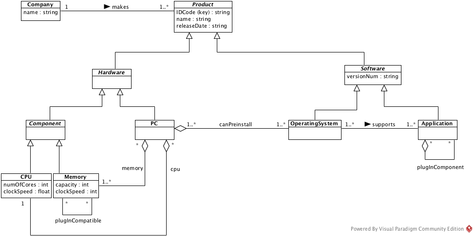

CS 332/780 Project 3 Fall 2015
CS 332/780: Object-Oriented Databases Fall 2015
PROJECT 3: Further Improvement and JDO Schemas
Due: 12/04/15, Friday, 11 PM
Use ObjectDB version 2.6.4
for this and next projects
(this seems to be the most recent, stable version).
This project has two parts.
Part 1
Conduct a final critical review and remodel your Project 2 model.
The comments made in the Project 2 grade report should be taken into account.
Further insight and critical evaluation of your own should also be
brought to bear on the improved model.
Adding more things to your model may not improve it – it could make the model worse.
On the other hand, the model would be greatly improved if poor and/or redundant structures are replaced by
cleaner and more concise structures.
Incorporate bitemporal information on the following two relations in the context of your model:
-
Preinstallation relation between PCs and hardware components.
-
Support relation between PCs/operating systems and software applications.
Both will require the use of relation classes.
The intended semantics of valid period should be obvious.
Part 2
This part is an exercise in mapping a UML model to JDO class schemas.
Implement the following UML class diagram in JDO.
This is an abridged PC model
(due to the fact that the ObjectDB free version supports at most 10 persistent classes).
The relation plugInCompatible(Memory, Memory) is assumed to be symmetric.

-
The Java classes should use the same class/attribute/relation names used in the UML model.
-
In this project, it is adequate to use
HashSet<E>
uniformly to implement binary relations with multiplicities greater than 1.
However you might use
TreeSet<E>
or
LinkedList<E>
to store elements of E in suitable sorted order.
Note that TreeSet<E> requires the class E to implement the
Comparable<E>
or
Comparator<E>
interface by providing, respectively, the compareTo or compare function.
For two examples of use of TreeSet<E>, see the CourseSection and Take classes in the
college example.
-
All inverse relations (except for symmetric plugInCompatible) must be implemented by class fields – choose suitable relation names.
Next, write a Java class named CreateData that includes code to create
at least one instance of each of the seven relations.
It will be helpful to create data by means of constructors in relevant classes.
Running the main function of CreateData is to create example data
in the database file named "PC.odb".
Recall that a function call pm.makePersistent(x) is used to store x
as persistent object, and this function call is unnecessary if x is reachable from
an existing persistent object due to the persistence-by-reachability rule.
Note also that all calls to pm.makePersistent(x)
and all operations modifying the database file must be enclosed by
pm.currentTransaction().begin() and pm.currentTransaction().commit().
This sample code for the college database might be helpful.
The last phase of the project consists of the following:
-
Compile and enhance the Java classes.
In this project, place all the classes in one folder,
the default package.
Persistent classes must include the annotation @javax.jdo.annotations.PersistenceCapable.
The class CreateData will not be transformed into a persistent class and so
should not include the annotation.
-
Run the class CreateData to create data in the file "PC.odb".
You can check the contents of the file by ObjectDB Explorer, which
should be in the bin folder of ObjectDB, for example C:\Program Files\objectdb\bin.
Submission
The due date is 12/04/15, Friday, 11 PM.
The following materials must be
emailed to yukawa.qc@optimum.net
using the subject header
CS 332, Project 3, Your Full Name:
-
a summary of the improvements made on Project 2
-
a concise description of the locations and the manner in which the bitemporal information
is incorporated into your model
-
a Visual Paradigm .vpp file containing the Project 3 model
-
all the Java source classes (those with .java extension) including CreateData.java
You may email the entire material in a .zip or .rar compressed file.
Before sending your project package, make sure to double check it has all the required materials.